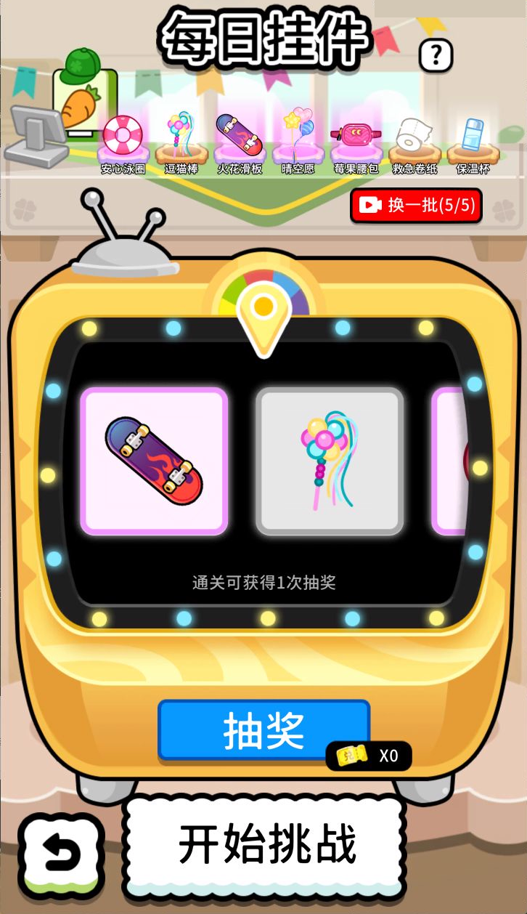
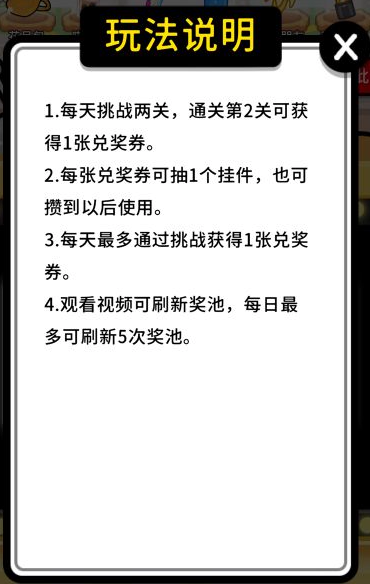
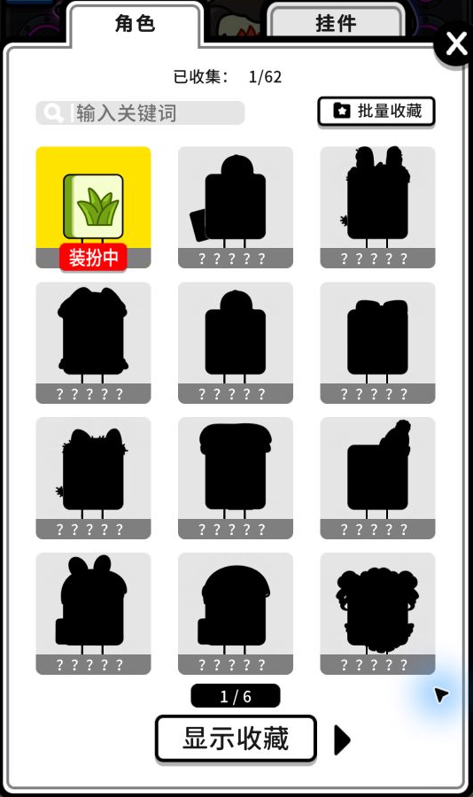
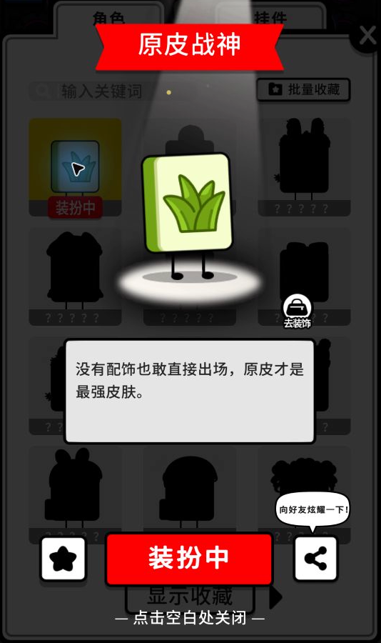
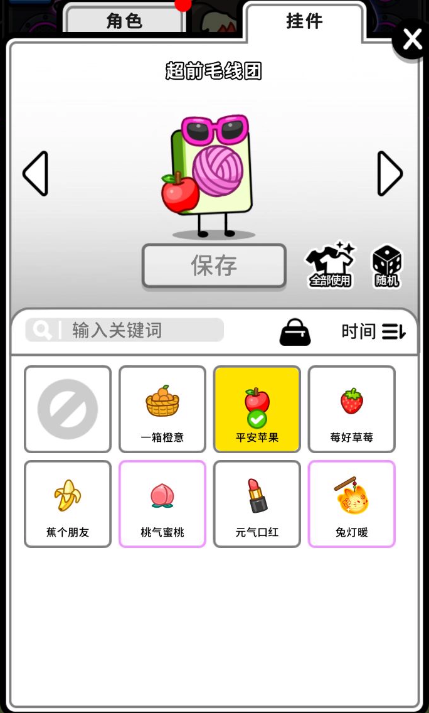
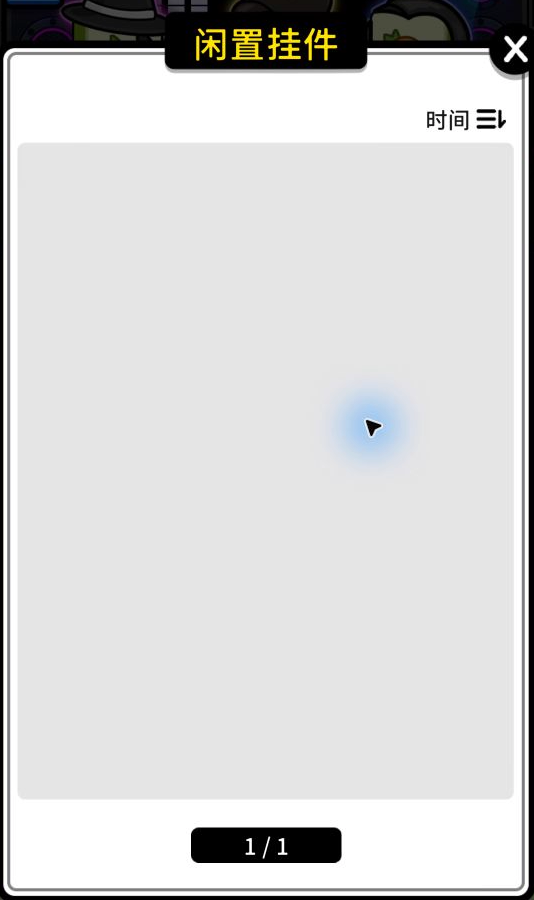
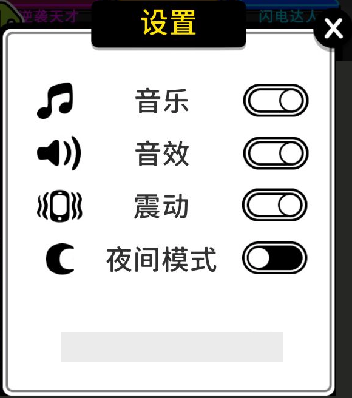

玩法与系统设计
负责玩法体验、系统需求与交互反馈设计，将设计目标整理为团队可执行、可验收的工作。
01 / 制作任务档案 · PROJECT 01
担任游戏制作人，负责玩法与系统设计、任务拆分、跨岗位协作及版本验收，推进微信、抖音平台的研发交付。
任职角色沿用履历记录；具体贡献按项目资料区分，共同职责不逐项归为单个项目的独立成果。
GAMEPLAY / 游戏体验








画面来自本人提供的正式版录屏及已上线微信小游戏；已裁去或遮盖账号、通知及玩家标识。
MY WORK / DESIGN VALUE
职责依据本人已确认履历整理；个人制作与统筹职责和团队执行分开说明。
职责依据本人履历与确认；原图补充设计证据，经营结果另行说明来源与口径。

担任游戏制作人，负责玩法与系统设计、任务拆分、跨岗位协作及版本验收，推进微信、抖音平台的研发交付。
项目团队共 6 人；个人承担制作与统筹职责；程序、美术及发行运营由对应岗位执行。
《羊了个羊：对对碰》列于这段任职经历中。
任职、角色与职责依据本人履历及确认。图示是本站原创的职责结构表达。
DESIGN / DELIVERY
围绕玩法体验、团队协作与交付验收介绍个人职责。
负责玩法体验、系统需求与交互反馈设计，将设计目标整理为团队可执行、可验收的工作。
结合体验测试与反馈梳理问题，确定调整优先级，协调研发实现并复核操作体验。
承担任务拆分、排期协调、跨岗位联调与组内验收，推进微信、抖音平台的研发交付。
PROJECT NOTES / 公开职责摘要
围绕已确认的职责整理。
每篇都有图示与独立阅读页面。